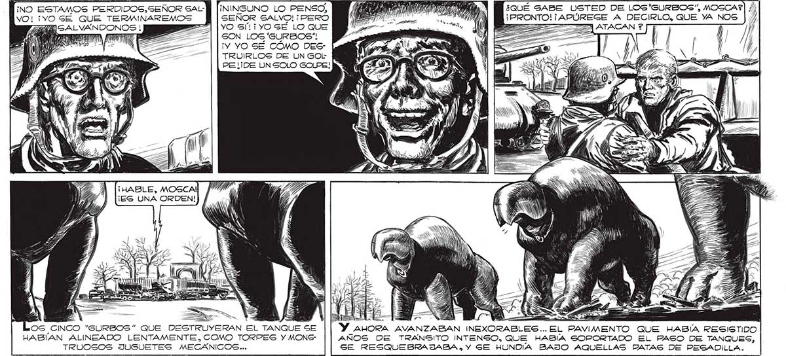
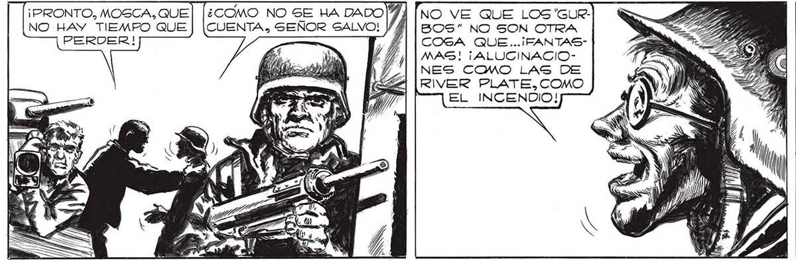

216 Mino EstAMOS PERDIDOS, SEÑOR SAL¡NINGUNO LO PENSO, ARENA, Mecos case usTeo De Los'surBoS”, MOSCA?) /) VO! 1YO SÉ QUE TERMINAREMOS SEÑOR SALVO! ¡PERO ii A IQ MierRonTO:TAPÚREGE A DECIRLO, QUE YA NOS | // 7 2=| | yO S'!¡ YO SE LO QUE po em, AN EZ ZETA GON LOG 'GURBOS"! 2 e “Wi AS ¡Y YO SE COMO DES- | TRUIRLOS DE UN GOL PEL ¡DE UN SOLO GOLPE! ¡HABLE, MOSCA! ¡ES UNA ORDEN! e o FIRMA NM q pr. VÁ TO uN 24 OG CINCO “GURBOS” QUE DESTRUYERAN EL TANQUE SE AHORA AVANZABAN INEXORA HABIAN ALINEADO LENTAMENTE. COMO TORPES Y MONC- AÑOS DE TRANSITO INTENSO, QUE HABIA SOPORTADO EL PASO DE TANQUES, TRUOSOS JUGUETES MECÁNICOS... SE RESQUEBRAJIABA , Y GE HUNDIA BAJO AQUELLAS PATAS DE PESADILLA. ¡PRONTO, MOSCA, QUE 5! A [NO VE QUE LOS 'GUR- 2 Nonca, NUNCA HE SENTIDO TANTO NO HAY TIEMPO QUE | [CUENTA, SEÑOR SALVO! YM | Bos” NO SON OTRA == TD DESALIENTO. PORQUE POR UN MOPERDER! T, / || Cosa QUE... ¡FANTAS- ST GAO | MENTO CREÍ QUE MOSCA TENÍA LA MAS! ¡ALUCINACIO- "¿El EAS A | SOLUCION. PERO NO... LOG 'GURBOS" NES COMO LAS DE : IN — FF | NO ERAN FANTASMAS... ERAN DEMARIVER PLATE, COMO VIII. ES EL INCENDIO!

